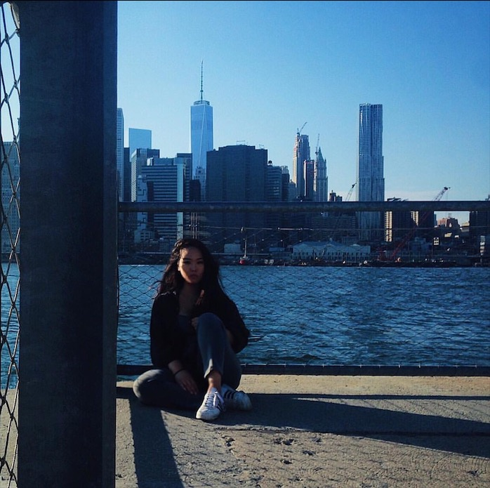

<!-- <!DOCTYPE html>
<html lang="en-us">

<head>

  <meta charset="UTF-8">
  <meta name="viewport" content="width=device-width, initial-scale=1.0">
  <meta http-equiv="X-UA-Compatible" content="ie=edge">

  <link rel="icon" href="assets/images/self.png">

  <link rel="stylesheet" href="https://stackpath.bootstrapcdn.com/bootstrap/4.2.1/css/bootstrap.min.css"
  integrity="sha384-GJzZqFGwb1QTTN6wy59ffF1BuGJpLSa9DkKMp0DgiMDm4iYMj70gZWKYbI706tWS" crossorigin="anonymous"/>

  <link rel="stylesheet" href="https://use.fontawesome.com/releases/v5.6.3/css/all.css" 
  integrity="sha384-UHRtZLI+pbxtHCWp1t77Bi1L4ZtiqrqD80Kn4Z8NTSRyMA2Fd33n5dQ8lWUE00s/" crossorigin="anonymous"/>

  <link rel="stylesheet" type="text/css" href="assets/css/reset.css">
  <link rel="stylesheet" type="text/css" href="assets/css/style.css">

  <link href="https://fonts.googleapis.com/css?family=Quicksand|Tinos" rel="stylesheet">
  <link href="https://fonts.googleapis.com/css?family=Bangers|Carter+One" rel="stylesheet">

  <title>About | Robin Kim</title>
  
</head>

<body> -->

  <!-- <header id="masthead">
    <div class="container">
      <a href="index.html" id="logo">Robin Kim</a>
      <nav>
        <a href="index.html">About</a>
        <a href="portfolio.html">Portfolio</a>
        <a href="contact.html">Contact</a>
      </nav>
    </div>
  </header>

  <div id="main-container" class="container">
    <section class="main-section">
      <h1>About Me</h1>

      

      <p>My name is Robin Kim. I was born in Daegu, South Korea but moved to New York City when I 
        was 1 years old. I moved around a couple times but ended up setting in Bayside. I went to 
        Bronx High School of Science then to NYU Tandon School of Engineering for a Biomolecular Science
        degree.</p>

      <p> In the middle of degree, I ruined my back and ended up taking time off of class, where
        I decided to teach myself some basic code to pass the time. This was where I realized that 
        coding was what I truly wanted to continue with and not biology.</p>

      <p></p>

    </section>

  </div> -->
<!-- 
  <footer class="footer mt-auto py-3">
    <span class="text-muted">
      <p>Copyright &copy; | <a href="https://github.com/robsookim/word-a-day">GitHub Repo</a></p>
    </span>
  </footer>

</body>

</html> -->